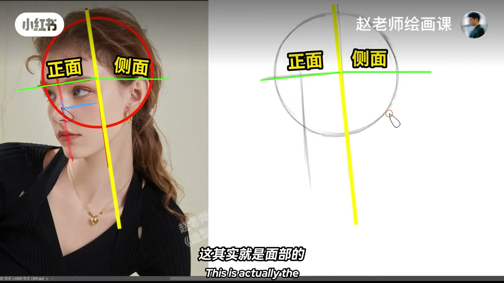
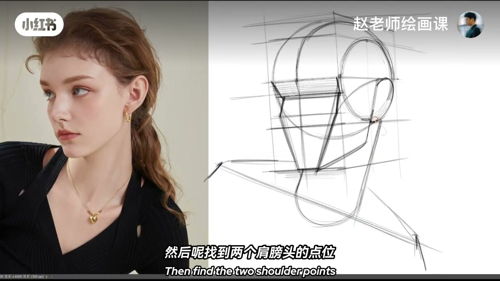
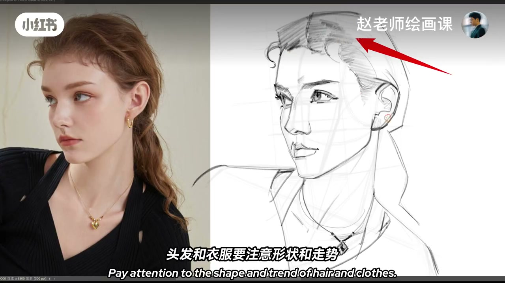

内容要点
示范超美小姐姐头像：找到颅骨所在圆与眉弓线，连接眉心到下巴得面中线；根据眉梢点拉一条平行于面中线的线——这是面部正面与侧面的分界线。根据鼻底找中庭宽度得上庭下庭，三庭向右延伸要体现透视压缩；根据这四个点得到颧骨圆，其余水到渠成。眼睛约占头长二分之一，轻松画出眼睛体块。往下画脖子圆柱注意斜度，找到两个肩膀头点位连线得肩膀动态。细画时有体块和透视就稳：五官大小借辅助线；头发衣服项链相对脸要概括，才能突出脸部主体。
知识结构
面中线＋分界线＋三庭压缩＋颧骨圆。
斜圆柱＋两肩点＝肩动态。
脸详，发衣链概括。
头颈肩是一条关系链：面中线定头，斜颈接上，肩点连线定动态；次要物必须让位给脸。
00:00-00:49面中线到眼睛体块
今天示范一个超美的小姐姐头像。首先找到颅骨所在的圆，再找出眉弓线；接着连接眉心到下巴的这根线，我们叫它面中线。根据眉梢点拉一条平行于面中线的线，这其实就是面部正面和侧面的分界线。
根据鼻底找到中庭的宽度，得到上庭和下庭；三庭向右延伸要体现出透视压缩。根据这四个点就可以得到颧骨圆，剩下的就会水到渠成。根据眼睛占总头长的二分之一，可以轻松画出眼睛的体块——头部的体块和透视就搞定了。00:20／00:40。

00:49-01:10脖子斜度与肩线
往下画出脖子所在的圆柱，这里要注意它的斜度；然后找到两个肩膀头的点位，出一条线就可以得到肩膀的动态。
好，开始细画——有了体块和透视的理解，细画起来简直稳如老狗。00:55。

01:10-01:35突出脸：其余概括
五官的大小可以借助辅助线来确定；头发和衣服要注意形状和走势。对了还有项链——和脸相比，这些次要的都要画得很概括，才能突出脸部这个主体。
OK 完美收官。还想看哪种角度的头像示范，评论区告诉我。01:15。

完整转录（33段）
以下文本由 Whisper medium 模型自动转录，可能存在少量识别误差，已尽可能修正。
今天来示范一个超美的小姐姐头像
首先,找到颅骨所在的圆
再找出眉弓线
接著呢,连接眉心到下巴的这根线
我们叫它面中线
根据眉梢点拉,拉一条平行于面中线的线
这其实就是面部的正面和侧面的分界线
根据笔底,找到中庭的宽度
得到上庭和下庭
三庭向右延伸
要体现出透视压缩
根据这四个点呢,就可以得到捏骨圆了
剩下的呢,就会水到其成
根据眼睛占总头长的二分之一
我们可以轻松的画出眼睛的体块
头部的体块和透视
就搞定了
往下,我们画出脖子所在的圆柱
这里呢,要注意它的斜度
然后呢,找到两个肩膀头的点位
出一条线,就可以得到肩膀的动态
好,开始细画
你看啊,有了体块和透视的理解
细画起来,简直就是
稳如老狗
五官的大小可以借助辅助线来确定
头发和衣服要注意形状和走势
对了,还有项链
和脸相比呢,这些次要的都要画得很概括
才能突出脸部这个主体
OK,完美收官
你还想看哪种角度的头像示范呢?
评论区,告诉我